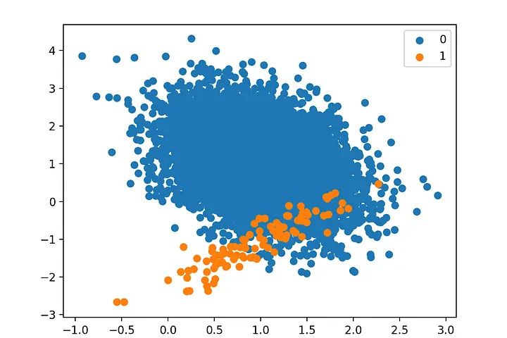
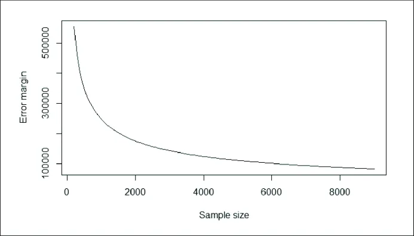
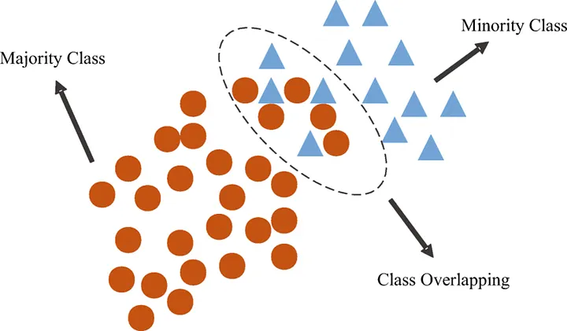
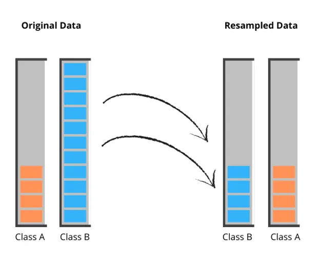
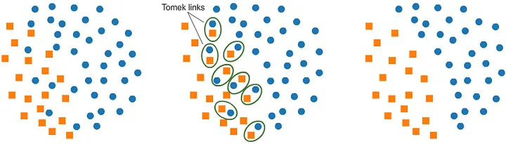
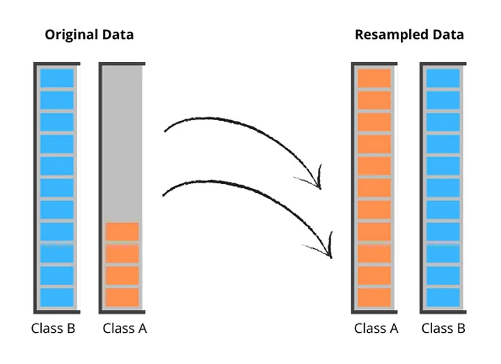

Imbalanced data are those that have more instances of a certain class than of others. As you can see in the image below, where there is more information of the Class 0 than the Class 1.

Image from
Smilegate AIWell, there are some situations that we have to pay attention:
This can take a long time to discuss, because the possibilities are very wide. But, there are some factors that may influence the ability of a classifier to identify rare events, mainly:
When we have a limit amount of data it can be a problem to identify samples of the minority class, once we have little information about this class. But, as the data increases, the error in the predictions tends to decrease.

Image from
ResearchGateClass separability is how separable one class is from another and the problem with this is when the classes overlap, the imbalanced class in this case is not a problem, instead the separability makes it harder to finds rules to classify correctly the minority class.

Image from
ResearchGateIn many classification problems, a single class is composed of various sub-clusters or concepts. These sub-clusters do not always contain the same number of examples, what can be a problem for the models. An example of these subclusters is the customer profile of an e-commerce store, where it contains segmentations of each type of client, but not always in the same quantity distribution.
In this section, we’ll cover ways to handle imbalanced data. There are several effective approaches to explore, so let’s jump into the main ones!
1. Collect more dataWhen we talk about imbalanced data, we talk about lack of data, the simplest approach to this problem is get more information about the minority class, it can solve the problem almost instantly. But, it is known that sometimes this is not possible. Because of that, were developed some techniques and algorithms to help us at this point.
2. UndersamplingUndersampling is a technique to reduce the number of samples of the majority class, with the objective to match the proportion of examples in the minority one. With it, the models have more chance to learn the patterns of each class in a balanced way, which avoids the algorithm from giving more importance to the class that has more amount of data.

There are many approaches of this technique, one of them is the RandomUnderSampler from imbalanced-learn, which is very simple and with the less computacional cost, since it removes by random samples of the majority class. It can be useful if we have an imbalanced ratio not to big between the classes, because this elimination can cause loss of information.
In addition to this algorithm, we have some others that can not be the best option in many cases, mainly if we’re leading with huge datasets, because the most of this algorithms have KNN models behind their operation. As we know, models based on distance take a long time to execute, since they have to compare one variable with all others. For more details about them, you can click in their names and test which works better in your situation:
There is another distance-based algorithm called TomekLinks, but it is very different about the ones cited above, because while they are looking to balance the data, TomekLinks are worried to remove those samples there are in the boundary of the classes or in the overlap zone. This can be very useful to the machine learning models generate better, because we are removing samples there are difficult to classify.

Image from
MlwhizAn algorithm similar to TomekLinks is the Instance Hardness Threshold, which is the probability of an observation being misclassified. So in other words, the instance hardness is 1 minus the probability of the class. For class 1:
instance hardness = 1 - p(1)
Briefly, this technique consists in determining the instance hardness and removing the observations that are harder to classify. In other words, removing the observations with high instance hardness or low class probability.
Example of implementation
# Import the library
from imblearn.under_sampling import RandomUnderSampler
# Create an instance of the algorithm
rus = RandomUnderSampler(sampling_strategy='auto',
random_state = 0)
# Split into X and y
X = df.drop('Target', axis = 1)
y = df['Target']
# Fit the data
X_under, y_under = rus.fit_resample(X, y)
3. Oversampling
On the contrary of Undersampling, Oversampling is a method to increase the samples of the minority class until it reaches the same ratio to the majority one. The most common algorithms for it are RandomOverSampler and SMOTE from imbalanced-learn. Some authors say that RandomOverSampler may cause overfitting, because this model just duplicated the samples that already exists, what can make the machine learning algorithms have a great performance on the train set, but a bad result in real datasets. SMOTE per si, it is a better choice, since it will create, not duplicated, new samples of the minority class based on the distance between each other.

There are other algorithms that extend the original SMOTE functions to do this work as:
All these algorithms can be very useful to improve the models performance, but it is very important to say that if you are using a huge dataset it will take much computational cost to execute these methods, since they also work with KNN models and some of them train more than 3 algorithms to create new synthetic data.
Example of implementation
# Import the library
from imblearn.over_sampling import SMOTE
# Create an instance of the algorithm
sm = SMOTE(sampling_strategy='auto', random_state = 0,
k_neighbors=5)
# k_neighbors is the quantity of proximity samples
# to utilize in the distance calcs
# Split into X and y
X = df.drop('Target', axis = 1)
y = df['Target']
# Fit the data
X_over, y_over = sm.fit_resample(X, y)